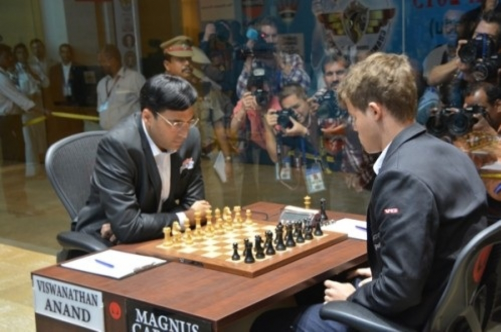
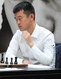

Os campeonatos de xadrez são eventos competitivos que reúnem jogadores de todo o mundo para testar suas habilidades neste antigo jogo de estratégia. O xadrez é conhecido por sua rica história e complexidade, e os campeonatos dão aos mestres do xadrez a chance de dominar o tabuleiro. Existem muitos campeonatos de xadrez, desde torneios locais e regionais até torneios internacionais, como o Campeonato Mundial de Xadrez. Este último é o de maior prestígio, com o atual campeão enfrentando adversários de alto nível em múltiplas lutas, muitas vezes durante várias semanas. O formato do xadrez competitivo pode variar, incluindo jogos clássicos, jogos rápidos e jogos de blitz. Esses diferentes formatos de jogo apelam a diferentes estilos e estratégias de jogo. Os jogadores precisam de uma combinação única de habilidades como cálculo preciso, memória, planejamento estratégico e resistência mental. Além dos torneios individuais, são organizadas competições por equipes, como as Olimpíadas de Xadrez, onde se enfrentam países de diversas partes do mundo. O xadrez também é popular nas escolas e muitos jovens participam de campeonatos estudantis para desenvolver suas habilidades. Os campeonatos de xadrez não só promovem uma competição saudável, mas também enriquecem a cultura do xadrez, contribuindo para o crescimento e popularidade deste jogo intelectual. São uma plataforma para celebrar a diversidade e o talento dos jogadores de xadrez, unindo pessoas de diferentes origens e culturas através do seu amor.
O Campeonato Mundial de Xadrez é uma competição que determina o campeão mundial do esporte. Homens e mulheres são elegíveis a disputar este título. Existe também um evento apenas para mulheres, com o título de "Campeonato Mundial Feminino de Xadrez", e competições para juniores, juvenis, seniores (para mais de 50 anos) e computadores. Algumas mulheres jogaram as competições do campeonato mundial absoluto, como Maia Chiburdanidze, Susan Polgar e Judit Polgar. A que obteve mais sucesso foi a húngara Judit Polgar, que chegou nas quartas de finais do campeonato mundial de 1999 e na final do campeonato de 2005.
O atual campeão é Ding Liren, que se tornou o primeiro chinês a ganhar a competição, após derrotar o russo Ian Nepomniachtchi.
